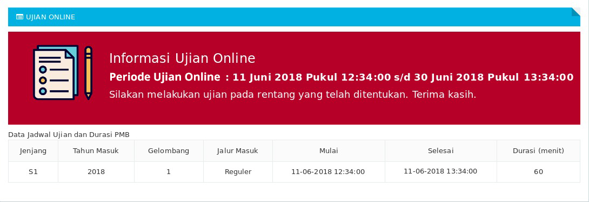
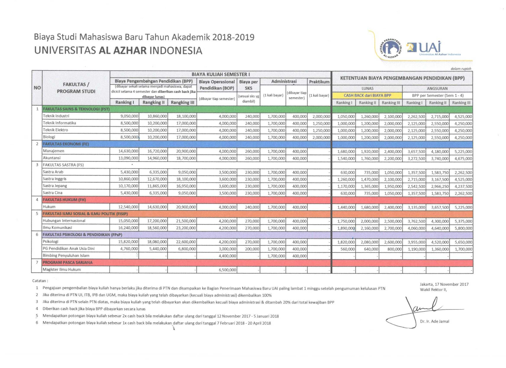

Registrasi PMB
Untuk calon mahasiswa baru, perlu diperhatikan mengenai tata cara registrasi PMB dengan membaca prosedur yang telah ditetapkan
Prosedur PMB
- 1. Melakukan registrasi user PMB Online
- 2. Lakukan Aktivasi user sesuai dengan email terkirim oleh Aplikasi PMB
- 3. Mengisi Formulir
- 4. Lakukan Pembayaran sesuai metoda pembayaran yang tersedia
- 5. Isi kelangkapan Data Diri, Orang Tua/Wali dan Pendidikan
- 6. Cetak Formulir & Cetak Kartu Ujian
- 7. Melakukan ujian secara online sesuai jadwal yang telah ditetapkan
- 8. Pengumuman hasil ujian online akan diinformasikan pada halaman Pengumuman di Aplikasi PMB
Jalur Masuk Test Seleksi
- 1. Melakukan registrasi user PMB Online
- 2. Lakukan Aktivasi user sesuai dengan email terkirim oleh Aplikasi PMB
- 3. Mengikuti petunjuk pendaftaran online
- 4. Login ke Aplikasi PMB
- 5. Mengisi Formulir
- 6. Pilih jalur masuk Test Seleksi
Jalur Masuk Unggulan
Persyaratan Pendaftaran
- 1. Tahun lulus SMA sederajat, sesuai tahun penerimaan mahasiswa baru UAI
- 2. Memperoleh rata-rata nilai rapor SMA sederajat minimal 7,0 pada kelas 10, 11, dan 12 (semester ganjil) untuk SMA sederajat dengan Akreditasi A, atau
Cara Pendaftaran
- 1. Melakukan registrasi user PMB Online
- 2. Lakukan Aktivasi user sesuai dengan email terkirim oleh Aplikasi PMB
- 3. Mengikuti petunjuk pendaftaran online
- 4. Login ke Aplikasi PMB
- 5. Mengisi Formulir
- 6. Pilih jalur masuk Unggulan
Jalur Masuk Beasiswa Korporat
Kepada lulusan siswa/i SMA sederajat, dengan nilai baik selama di Sekolah dan juga nilai ujian akhir yang baik pula, tetapi kurang mampu dalam hal ekonomi untuk biaya perkuliahan, UAI akan memberikan beasiswa penuh. Beasiswa penuh tersebut meliputi bebas biaya BPP, BOP dan SKS (kecuali biaya herregistrasi sebesar Rp. 400.000,- di semester 2 dst) selama indeks prestasi diperoleh yang bersangkutan di UAI minimal 3,25. Bila IP <3,25 maka mahasiswa yang bersangkutan diharuskan membayar sebagian BOP dan SKS seluruhnya (sesuai dengan biaya kuliah yang berlaku). Tetapi bila Indeks Prestasi yang bersangkutan kembali=3 ,25, maka biaya kuliah (BOP dan SKS) yang bersangkutan kembali dibebaskan. (Untuk beasiswa semacam ini dapat mendaftar melalui jalur beasiswa korporat dan tidak perlu melakukan pembayaran biaya pendaftaran).
Persyaratan Pendaftaran
- 1. Tahun lulus SMA sederajat minimal 1 tahun sebelumnya dari tahun penerimaan UAI.
- 2. Nilai minimal rata-rata untuk IPA : Matematika, Fisika, Kimia, Biologi dan Bahasa Inggris minimal 8.00.
- 3. Nilai minimal rata-rata untuk IPS : Matematika, Bahasa Inggris, Geografi, Ekonomi, dan Sosiologi minimal 8.00.
- 4. Jumlah terbatas.
Cara Pendaftaran
- 1. Melakukan registrasi user PMB Online
- 2. Lakukan Aktivasi user sesuai dengan email terkirim oleh Aplikasi PMB
- 3. Mengikuti petunjuk pendaftaran online
- 4. Login ke Aplikasi PMB
- 5. Mengisi Formulir
- 6. Pilih jalur masuk beasiswa korporat.
Jalur Masuk PMDK
Persyaratan Pendaftaran
- 1. Tahun lulus SMA sederajat, sesuai tahun penerimaan mahasiswa baru UAI.
- 2. Memperoleh rata-rata nilai rapor SMA sederajat minimal 7,5 pada kelas 10, 11, dan 12 (semester ganjil).
- 3. Jumlah terbatas.
Cara Pendaftaran
- 1. Mengisi formulir pendaftaran online UAI di penerimaan.uai.ac.id
- 2. Mengikuti petunjuk pendaftaran online (lihat cara pendaftaran)
- 3. Pilih jalur masuk PMDK
- 4. Melakukan pembayaran pendaftaran calon mahasiswa baru
- 5. Melampirkan foto copy rapor SMA sederajat yang telah dilegalisir kelas 10, 11 dan 12 (semester ganjil)
- 6. Melampirkan Surat Keterangan dari Kepala Sekolah bahwa ybs benar memperoleh rata-rata nilai minimal 7,5.
- 7. Dokumen pada point 5 dan 6, dikirimkan secara langsung ke PMB Lt. 1 Universitas Al Azhar Indonesia atau via pos yang ditujukan kepada Panitia Penerimaan Mahasiswa Baru, Kampus Universitas Al Azhar Indonesia, Komplek Masjid Agung Al Azhar, Jl. Sisingamangaraja, Kebayoran Baru, Jakarta Selatan, 12110.
Keuntungan
- 1. Bagi yang lulus berkas dan seleksi nilai rapor, tidak perlu tes seleksi.
- 2. Mendapatkan potongan BPP 25%.
Jalur Masuk PMDK Prestasi Kelas
Persyaratan Pendaftaran
- 1. Tahun lulus SMA sederajat, sesuai tahun penerimaan mahasiswa baru UAI.
- 2. SMA sederajat dengan Akreditasi A.
- 3. Memperoleh peringkat 1 sd 5 besar di kelas.
- 4. Jumlah terbatas.
Cara Pendaftaran
- 1. Mengisi formulir pendaftaran online UAI di penerimaan.uai.ac.id.
- 2. Mengikuti petunjuk pendaftaran online (lihat cara pendaftaran).
- 3. Pilih jalur masuk PMDK Prestasi.
- 4. Melakukan pembayaran pendaftaran calon mahasiswa baru.
- 5. Melampirkan foto copy rapor SMA sederajat yang telah dilegalisir kelas 10, 11 dan 12 (semester ganjil).
- 6. Melampirkan Surat Keterangan dari Kepala Sekolah yang dilegalisir bahwa ybs benar menduduki ranking 1 sd 5 besar di kelas.
- 7. Dokumen pada point 5 dan 6, dikirimkan secara langsung ke PMB Lt. 1 Universitas Al Azhar Indonesia atau via pos yang ditujukan kepada Panitia Penerimaan Mahasiswa Baru, Kampus Universitas Al Azhar Indonesia, Komplek Masjid Agung Al Azhar, Jl. Sisingamangaraja, Kebayoran Baru, Jakarta Selatan, 12110.
Keuntungan
- 1. Bagi yang lulus berkas, seleksi nilai rapor dan wawancara, tidak perlu tes seleksi.
- 2. Mendapatkan potongan BPP 40% dan BOP 20%.
PMDK Plus (Prestasi Bidang Seni & Olah Raga)
Tingkat International
- 1. Mengisi formulir pendaftaran online UAI di penerimaan.uai.ac.id.
- 2. Mengikuti petunjuk pendaftaran online (lihat cara pendaftaran).
- 3. Pilih jalur masuk PMDK Prestasi Seni dan Olah Raga Internasional.
- 4. Melakukan pembayaran pendaftaran calon mahasiswa baru.
- 5. Melampirkan foto copy rapor yang telah dilegalisir kelas 10, 11, dan 12 (semester ganjil).
- 6. Melampirkan surat pengantar dari KONI.
- 7. Melampirkan sertifikat lomba yang pernah diikuti.
- 8. Point 5 s.d 7 diatas, disampaikan atau dikirimkan secara langsung ke PMB Lt. 1 Universitas Al Azhar Indonesia atau via pos yang ditujukan Panitia Penerimaan Mahasiswa Baru, Kampus Universitas Al Azhar Indonesia, Komplek Masjid Agung Al Azhar, Jl. Sisingamangaraja, Kebayoran Baru, Jakarta Selatan, 12110.
- 9. Jumlah terbatas.
- 10. Bagi yang lulus berkas dan wawancara, tidak perlu tes seleksi.
- 11. Keuntungan bagi yang lulus seleksi, mendapatkan potongan BPP 100% dan BOP 50%.
Tingkat Nasional
- 1. Mengisi formulir pendaftaran online UAI di penerimaan.uai.ac.id.
- 2. Mengikuti petunjuk pendaftaran online (lihat cara pendaftaran).
- 3. Pilih jalur masuk PMDK Prestasi Seni dan Olah Raga Wilayah.
- 4. Melakukan pembayaran pendaftaran calon mahasiswa baru.
- 5. Melampirkan foto copy rapor yang telah dilegalisir kelas 10, 11, dan 12 (semester ganjil).
- 6. Bukti piagam.
- 7. Melampirkan surat pengantar dari Dinas Pemuda dan Olah Raga Setempat.
- 8. Point 5 s.d 7 diatas, disampaikan atau dikirimkan secara langsung ke PMB Lt. 1 Universitas Al Azhar Indonesia atau via pos yang ditujukan Panitia Penerimaan Mahasiswa Baru, Kampus Universitas Al Azhar Indonesia, Komplek Masjid Agung Al Azhar, Jl. Sisingamangaraja, Kebayoran Baru, Jakarta Selatan, 12110.
- 9. Jumlah terbatas.
- 10. Bagi yang lulus berkas dan wawancara, tidak perlu tes seleksi.
- 11. Keuntungan bagi yang lulus seleksi, mendapatkan potongan BPP 40%.
Tingkat Wilayah
- 1. Mengisi formulir pendaftaran online UAI di penerimaan.uai.ac.id.
- 2. Mengikuti petunjuk pendaftaran online (lihat cara pendaftaran).
- 3. Pilih jalur masuk PMDK Prestasi Seni dan Olah Raga Nasional.
- 4. Melakukan pembayaran pendaftaran calon mahasiswa baru.
- 5. Melampirkan foto copy rapor yang telah dilegalisir kelas 10, 11, dan 12 (semester ganjil).
- 6. Melampirkan surat pengantar dari KONI.
- 7. Melampirkan bukti piagam.
- 8. Point 5 s.d 7 diatas, disampaikan atau dikirimkan secara langsung ke PMB Lt. 1 Universitas Al Azhar Indonesia atau via pos yang ditujukan Panitia Penerimaan Mahasiswa Baru, Kampus Universitas Al Azhar Indonesia, Komplek Masjid Agung Al Azhar, Jl. Sisingamangaraja, Kebayoran Baru, Jakarta Selatan, 12110.
- 9. Jumlah terbatas.
- 10. Bagi yang lulus berkas dan wawancara, tidak perlu tes seleksi.
- 11. Keuntungan bagi yang lulus seleksi, mendapatkan potongan BPP 40% dan BOP 20%.
Registrasi User
- 1. Pilih Menu Registrasi & Aktivasi.
- 2. Isi Nama Lengkap.
- 3. Isi Alamat Email (Pastikan email yang digunakan aktif).
- 4. Isi Password (Pastikan anda mengingatnya, Password akan digunakan untuk masuk ke aplikasi PMB Online).
- 5. Masukan Anti Spam sesua yang tertera dalam gambar.
- 6. Klik tombol Daftar untuk menyelesaikan proses registrasi user.
Formulir PMB
Tata cara pengisian formulir
Formulir
- 1. Pilih Menu Formulir
- 2. Isi Nama Lengkap.
- 3. Isi No HP.
- 4. Isi No HP Orang Tua.
- 5. Pilih Jalur Masuk.
- 6. Pilih Jenjang Studi
- 7. Pilih Jurusan Asal.
- 8. Pilih Prodi 1 (pilihan 1).
- 9. Pilih Prodi 2 (pilihan 2).
- 10. Klik tombol Simpan untuk melanjutkan ke proses pembayaran.
Tata Cara Pembayaran Melalui Finpay
TATA CARA PEMBAYARAN FINPAY 021 PADA E-CHANNEL BANK
ATM MANDIRI
- 1. Pilih Menu Bayar/Beli
- 2. Pilih Telepon/HP
- 3. Pilih CDMA/Telkom
- 4. Pilih Telkom/Internet
- 5. Masukkan 12 digit Kode Bayar yang didapatkan dari Portal PMB atau Email, kemudian Pilih Benar
- 6. Akan mucul pada layar monitor ATM berisi Nama dan Nominal Tagihan.
- 7. Pilih Benar untuk melanjutkan pembayaran.
ATM BCA
- 1. Pilih Menu TRANSAKSI LAINNYA
- 2. Pilih Transaksi PEMBAYARAN
- 3. Pilih Jenis Pembayaran TELEPON/HANDPHONE
- 4. Pilih Operator Telepon TELKOM
- 5. Masukkan 12 digit Kode Bayar yang didapatkan dari Portal PMB atau Email, kemudian Pilih Benar
- 6. Akan mucul pada layar monitor ATM berisi Nama dan Nominal Tagihan.
- 7. Pilih YA untuk melanjutkan pembayaran
ATM Danamon
- 1. Pilih Jenis Transaksi PEMBAYARAN
- 2. Pilih Jenis Pembayaran TELEPON
- 3. Masukkan 3 digit awal Payment Code yang didapat dari website merchant (021)
- 4. Masukkan 9 digit terakhir Payment Code yang didapat dari website merchant
- 5. Pilih Sumber Dana TABUNGAN
- 6. Pilih YA untuk melanjutkan pembayaran
ATM BNI
- 1. Pilih Menu MENU LAIN
- 2. Pilih Transaksi PEMBAYARAN
- 3. Pilih Jenis Pembayaran TELEPON/HP
- 4. Pilih Jenis Pembayaran Telepon TELKOM
- 5. Pilih Jenis Pembayaran Telkom TELEPON/SPEEDY
- 6. Masukkan 12 digit Kode Bayar yang didapatkan dari Portal PMB atau Email, kemudian Pilih Benar
- 7. Pilih YA untuk melanjutkan pembayaran
- 8. Pilih Rekening Tabungan
ATM BII
- 1. Pilih Menu PEMBAYARAN/TOP UP PULSA
- 2. Pilih Jenis Pembayaran LAYANAN UMUM
- 3. Pilih Jenis Pembayaran TELKOMPAY
- 4. Masukkan 12 digit Kode Bayar yang didapatkan dari Portal PMB atau Email, kemudian Pilih Benar
- 5. Pilih YA untuk melanjutkan pembayaran
- 6. Pilih Jenis Rekening TABUNGAN
ATM OCBC NISP
- 1. Pilih MENU LAINNYA
- 2. Pilih Transaksi PEMBAYARAN
- 3. Pilih Jenis Pembayaran TELEPON/TELKOM
- 4. Pilih Jenis Pembayaran TELP/FLEXI/SPEEDY
- 5. Masukkan 12 digit Payment Code yang didapat dari website merchant
- 6. Pilih YA untuk melanjutkan pembayaran
Internet Banking Mandiri
- 1. Login ke internet banking Mandiri
- 2. Pilih menu pembayaran
- 3. Pilih jenis pembayaran Telkom
- 4. Pilih provider Telkom
- 5. Masukkan 3 digit awal yang di dapat dari website merchant pada kode area (021)
- 6. Masukkan 9 digit kode terakhir yang didapat dari website merchant
- 7. Klik Lanjutkan
- 8. Masukkan challenge code ke token
- 9. Masukkan kode token internet banking Mandiri
- 10. Klik Submit
KlikBCA
- 1. Login ke KlikBCA
- 2. Pilih menu pembayaran
- 3. Pilih jenis pembayaran Telepon
- 4. Pilih operator Telkom
- 5. Masukkan 12 digit payment code yang didapat dari website merchant (021xxx)
- 6. Klik Lanjutkan
- 7. Masukkan challenge code ke token
- 8. Masukkan kode response yang muncul pada key BCA
iBanking BNI
- 1. Login ke iBanking BNI
- 2. Pilih menu Transaksi => pilih pembayaran/pembelian
- 3. Pilih pembayaran Tagihan => Telepon/Seluler (Pasca Bayar Kode Area)
- 4. Pilih provider Telkom/Speedy
- 5. Masukkan 3 digit awal kode payment (021) di kolom pertama, dan 9 digit terakhir di kolom selanjutnya pada field no telepon
- 6. Masukkan kode yang muncul ke token
- 7. Masukkan nomor response yang dihasilkan oleh BNI e-secure
- 8. Masukkan kembali kode yang muncul ke token
- 9. Masukkan kembali nomor response yang dihasilkan oleh BNI e-secure
Tata Cara Pembayaran Melalui Alfa, PT Pos, dan Pegadaian
Cara pembayaran melalui

- 1. Catat kode pembayaran dari potal PMB atau yang dikirim ke email
- 2. Kunjungi gerai Alfamart, Alfa Midi & Dan-Dan terdekat.
- 3. Sampaikan kepada Kasir untuk melakukan pembayaran Telkom ==> Speedy.
- 4. Berikan kode pembayaran Kepada Kasir (Kode Pembayaran = No Telkom Speedy).
- 5. Kasir akan memasukkan Kode Pembayaran di aplikasi, dan akan menginformasikan Nama dan Nominal yang akan dibayar.
- 6. Lakukan pembayaran sesuai dengan nominal yang diinformasikan oleh Kasir.
- 7. Mintalah bukti pembayaran transaksi Anda kepada Kasir.
- 8. Transaksi pembayaran telah selesai dilakukan.
Cara pembayaran melalui

- 1. Catat kode pembayaran dari potal PMB atau yang dikirim ke email
- 2. Kunjungi gerai PT POS terdekat.
- 3. Sampaikan kepada Teller untuk melakukan pembayaran Telkom ==> Speedy.
- 4. Berikan kode pembayaran Kepada Teller (Kode Pembayaran = No Telkom Speedy).
- 5. Teller akan memasukkan Kode Pembayaran di aplikasi, dan akan menginformasikan Nama dan Nominal yang akan dibayar.
- 6. Lakukan pembayaran sesuai dengan nominal yang diinformasikan oleh Teller.
- 7. Mintalah bukti pembayaran transaksi Anda kepada Teller.
- 8. Transaksi pembayaran telah selesai dilakukan.
Cara pembayaran melalui

- 1. Catat kode pembayaran dari potal PMB atau yang dikirim ke email
- 2. Kunjungi gerai Pegadaian terdekat.
- 3. Sampaikan kepada Teller untuk melakukan pembayaran Telkom ==> Speedy.
- 4. Berikan kode pembayaran Kepada Teller (Kode Pembayaran = No Telkom Speedy).
- 5. Teller akan memasukkan Kode Pembayaran di aplikasi, dan akan menginformasikan Nama dan Nominal yang akan dibayar.
- 6. Lakukan pembayaran sesuai dengan nominal yang diinformasikan oleh Teller.
- 7. Mintalah bukti pembayaran transaksi Anda kepada Teller.
- 8. Transaksi pembayaran telah selesai dilakukan.
Cara pembayaran melalui

- 1. Pilih menu Transaksi Lain.
- 2. Pilih menu Pembayaran.
- 3. Pilih Lainnya, lalu pilih Brivia.
- 4. Masukkan nomor rekening dengan nomor Virtual Account/ Kode Pembayaran yang didapat dari Portal PMB dan email.
- 5. Lalu akan muncul Nominal dan nama calon mahasiswa, Ketika muncul konfirmasi pembayaran, silahkan pilih Ya.
- 6. Transaksi telah selesai dan silahkan ambil bukti pembayaran anda
Cara pembayaran melalui
- 1. Pada menu utama, pilih Menu Lain.
- 2. Pilih Transfer.
- 3. Pilih Pilih Rekening Tabungan.
- 4. Pilih Pilih Ke Rekening BNI.
- 5. Masukkan nomor virtual account yang didapat dari Portal PMB atau email, lalu pilih Tekan Jika Benar.
- 6. Masukkan jumlah tagihan yang akan anda bayar secara lengkap. Pembayaran dengan jumlah tidak sesuai akan otomatis ditolak.
- 7. Masukkan berita yang diinginkan (boleh dikosongkan).
- 8. Jumlah yang dibayarkan, nomor rekening dan nama calon mahasiswa akan ditampilkan. Jika informasi telah sesuai, tekan Ya.
- 9. Transaksi Anda sudah selesai.
Cara pembayaran melalui
- 1. Pada menu utama, pilih Transaksi Lainnya.
- 2. Pilih Pembayaran.
- 3. Pilih Pembayaran lainnya.
- 4. Pilih Virtual Account.
- 5. Masukkan 16 digit No. Virtual Account yang didapat dari Portal PMB dan email, lalu tekan Benar.
- 6. Pada halaman konfirmasi transfer akan muncul jumlah yang dibayarkan, nomor rekening, & nama calon mahasiswa. Jika informasi telah sesuai tekan Benar.
- 7. Pilih rekening pembayaran Anda dan tekan Benar.
Tata Cara Pembayaran Melalui
Finnet Mandiri ClickPay

- 1. Pilih Metoda Pembayaran Mandiri ClickPay
- 2. Masukan Nomor Kartu Debit
- 3. Masukan Respon Token Mandiri
- 4. Klik tombol Proses Pembayaran
Tata Cara Pembayaran Melalui
Finnet BCA KlikPay

Tata Cara Pembayaran Melalui Finnet BCA KlikPay
Ujian Online
Untuk melakukan ujian online, calon mahasiswa diharapkan untuk memiliki koneksi intenet yang stabil dan mencari tempat yang nyaman untuk melakukan ujian online ini. Adapun langkah-langkah ujian online adalah sebagai berikut :
1. Silakan klik menu Ujian Online.

2. Bila ujian online belum dimulai, maka akan muncul notifikasi sebagai berikut :
3. Bila ujian sudah mulai, silakan memulai ujian online. Langkah-langkahnya adalah :
Baca terlebih dahulu keterangan yang tertera pada halaman ujian online, baik rentang tanggal ujian, dan lama waktu ujian.
4. Selanjutnya klik tombol mulai ujian

Maka calon mahasiswa memulai ujian di tanggal dan durasi waktu yang telah ditentukan. Jika sudah memulai ujian, waktu ujian online
akan terus berjalan dan tidak dapat di “Pause”, sehingga calon mahasiswa harus benar-benar memperhatikan waktu ujian online tersebut.
Perhatikan :
- 1. Menjelaskan soal yang sudah dan belum diselesaikan. Warna hijau menandakan soal telah diselesaikan, sebaliknya warna merah menandakan soal belum diselesaikan.
- 2. Sisa waktu adalah batas waktu mengerjakan bidang soal yang diberikan.
- 3. Calon mahasiswa dapat memilih bidang soal yang telah ditentukan, sebagai contoh bila calon mahasiswa ingin menyelesaikan bidang soal Bahasa Inggris / TPA, maka klik Bahasa Inggris / TPA.
- 4. Kolom ini bertujuan untuk memberikan informasi nomor dan jumlah soal yang ada pada setiap bidang soal dan memberikan informasi kepada calon mahasiswa soal yang telah diselesaikan atau belum. Bila soal telah diselesaikan, maka pada kolom nomor tersebut akan berubah berwarna hijau. Silakan calon mahasiswa mengklik nomor yang belum berubah menjadi warna hijau, maka soal akan muncul sesuai dengan nomor yang dipilih oleh calon mahasiswa.
- 5. Bila calon mahasiswa telah yakin untuk menyelesaikan ujian online, silakan untuk tekan tombol “selesai ujian”.
5. Apabila calon mahasiswa telah menyelesaikan ujian online dan menekan tombol selesai ujian, maka calon mahasiswa
akan mendapatkan notifikasi sebagai berikut :

Biaya Kuliah
FAQ - Frequence Asked Question
- 1. Pastikan username dan password yang Anda masukkan benar.
- 2. Perhatikan huruf besar dan kecil berpengaruh di password Anda.
- 1. Tipe File yang diperbolehkan yaitu JPG/JPEG.
- 2. Ukuran file maksimal 500KB..